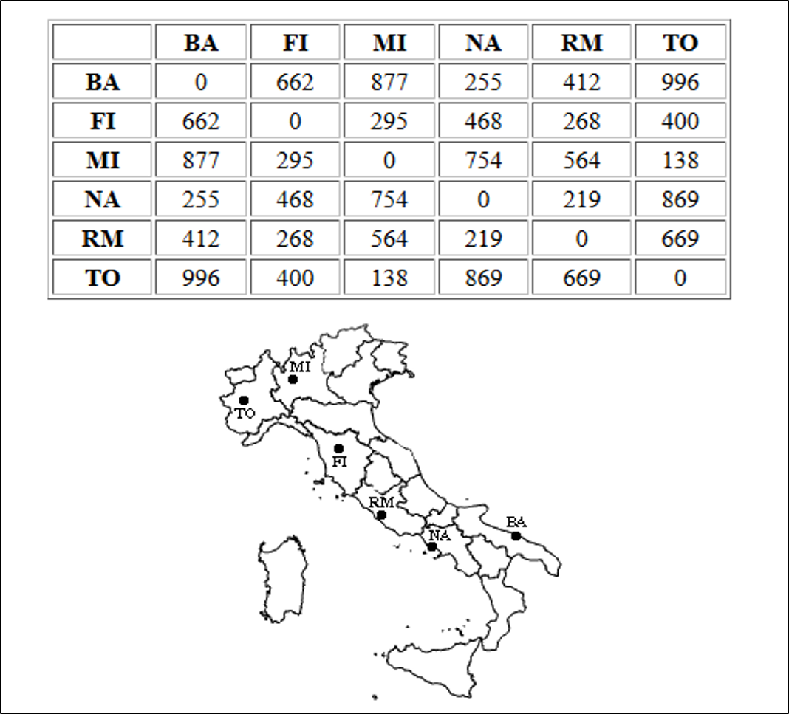
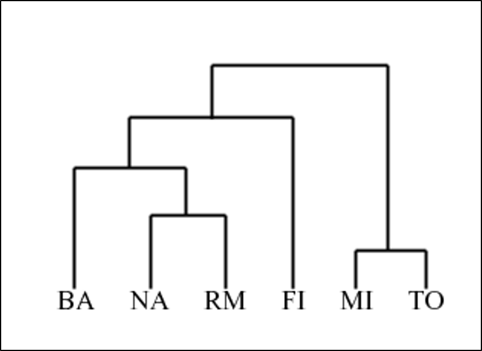
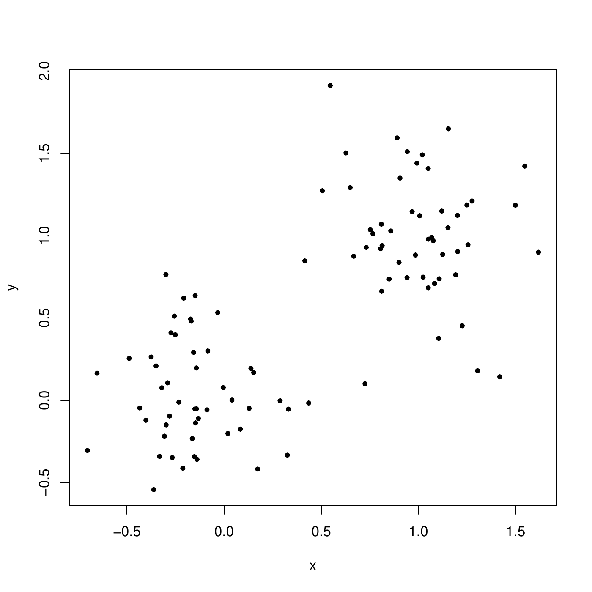
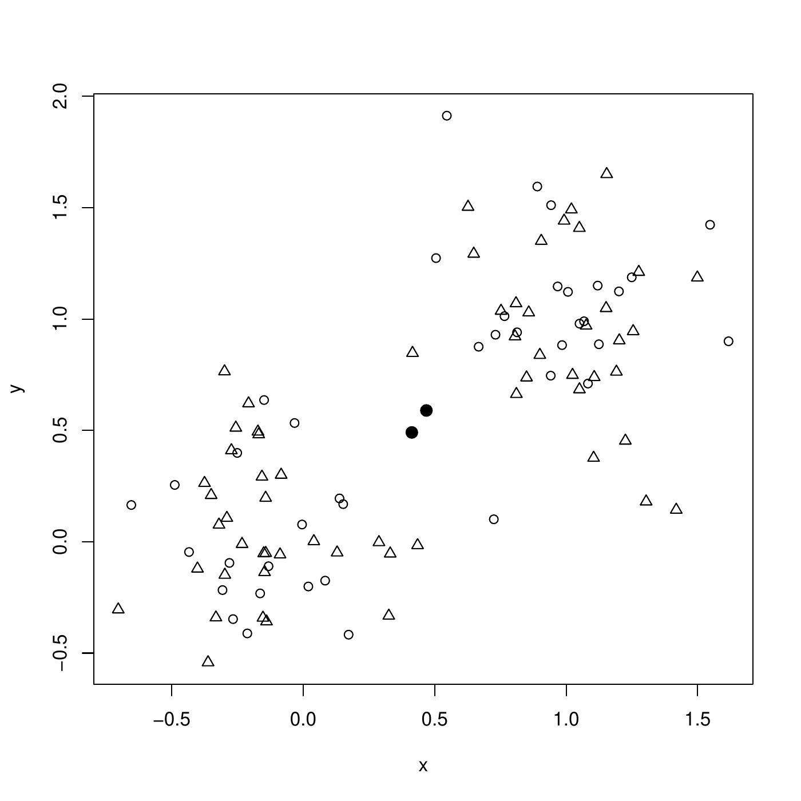
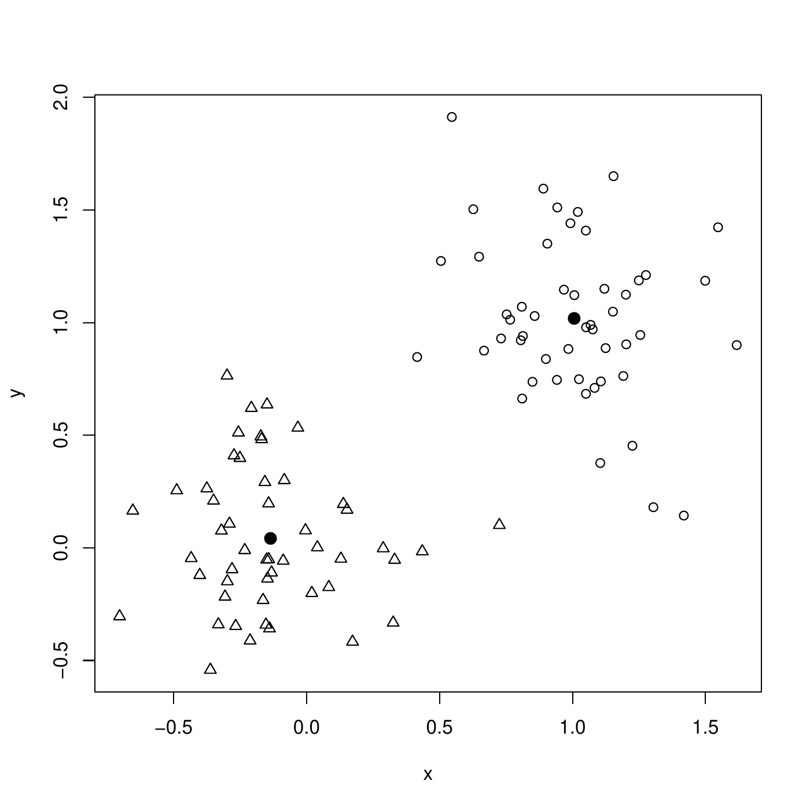
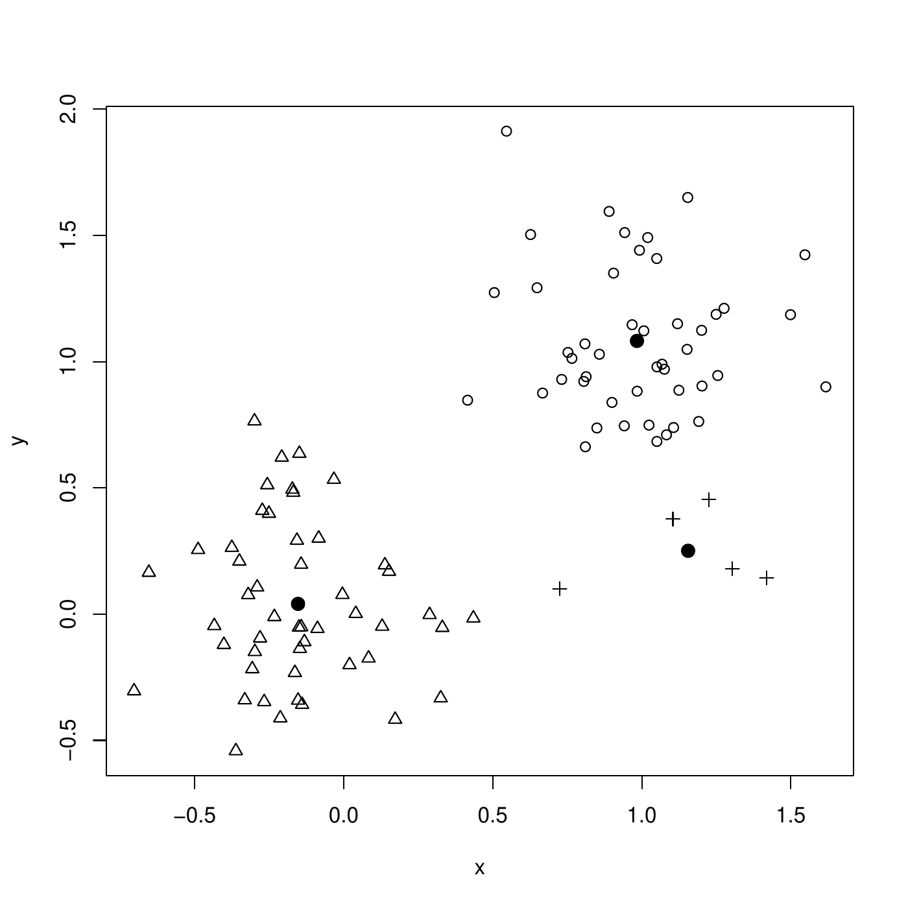
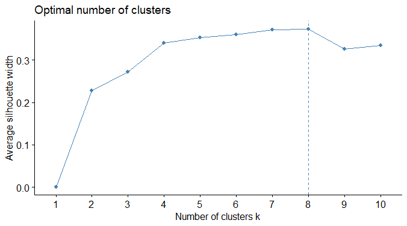
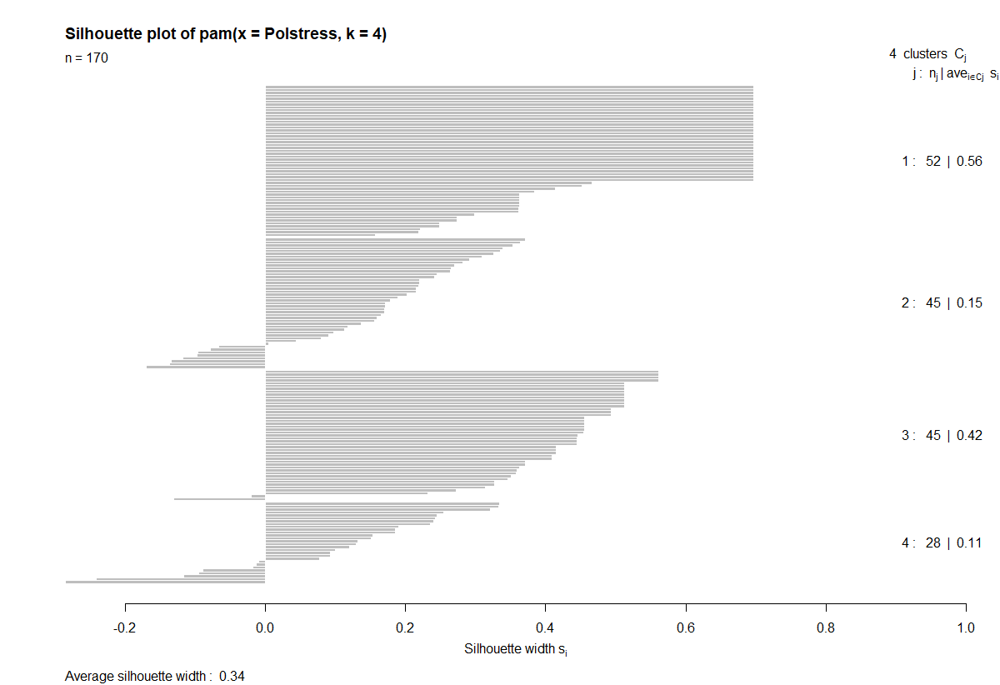
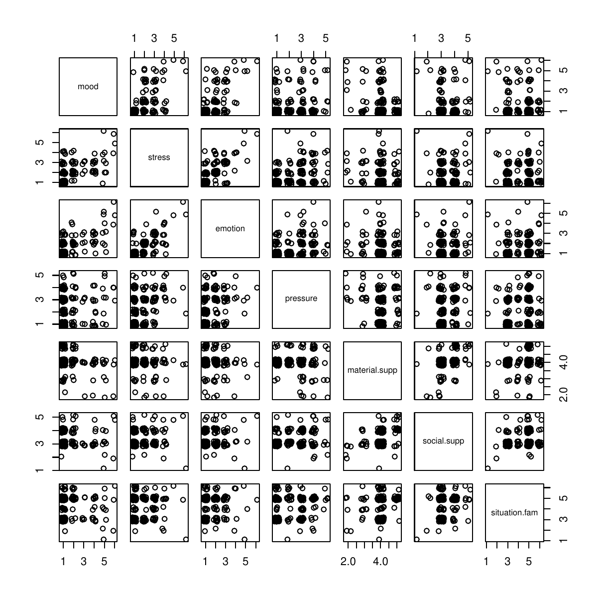
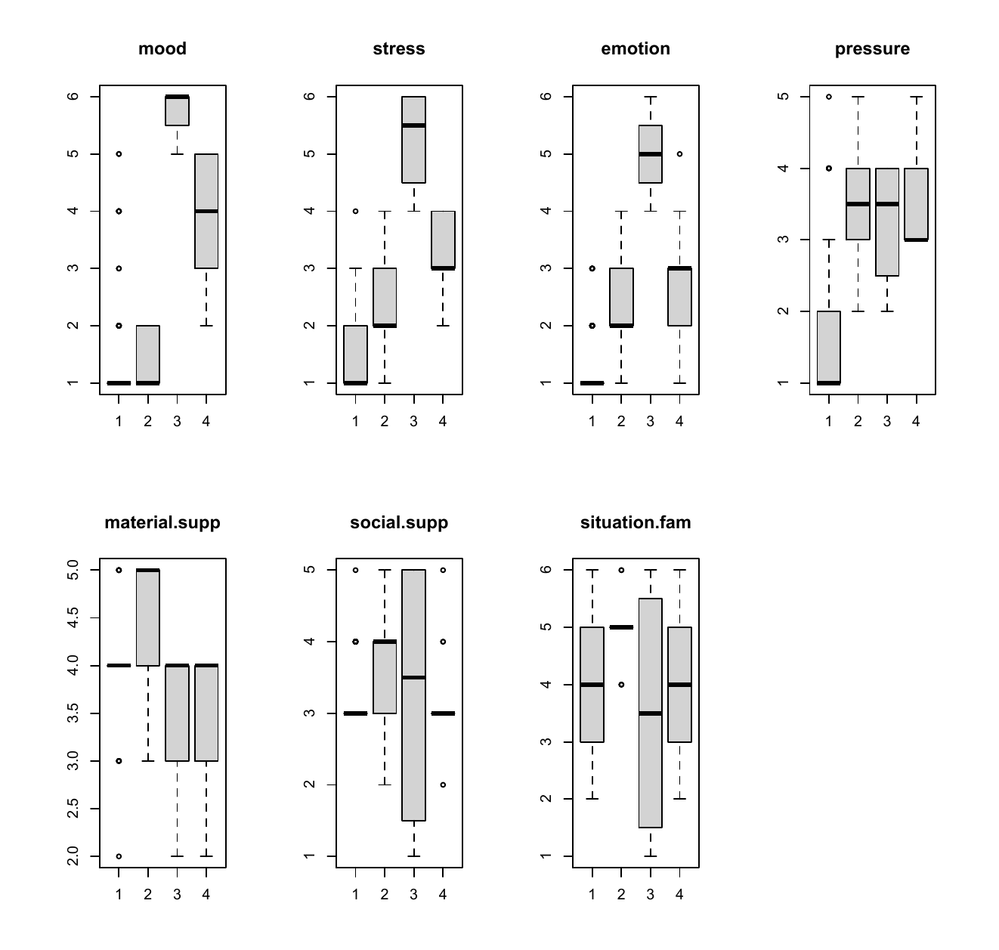

Clustering
Concepts
Clusters
A cluster is a group of instances that share some common characteristics measured by the features. They are similar. Unlike classification (supervised learning) where groups are already defined, clustering aims at finding groups that do not exist a priori.
Hierarchical clustering and partitioning
Two different approaches:
Hierarchical clustering: methods based on a dissimilarity matrix (hierarchical clustering).
Partitioning: methods based on the value of the features (K-Means, PAM).
Hierarchical clustering
Concept
Hierarchical clustering algorithms
Take a dissimilarity matrix as input: the features are used to compute dissimilarities between instances. The feature values are not by the algorithm strickly speaking.
Can be of two types: agglomerative (e.g., AGNES) or divisive (not treated).
In agglomerative algorithm, once two instances are clustered, they cannot be separated.
AGNES
Accronym for AGglomerative NESting: a sequential algorithm:
To start each instance is a cluster in itself.
Merge the two closest clusters.
Repeat 2 until only one cluster remains.
To merge two clusters (2), we need a linkage method. To link two clusters, we need dissimilarities.
Dissimilarity
A dissimilarity between two instances with features \(x\) and \(x'\) is a function \(d(\cdot, \cdot)\) such that
Non-negativity: \(d(x,x')\geq 0\),
Nullity: \(d(x,x') = 0\) iff \(x=x'\),
Symmetry: \(d(x,x') = d(x',x)\),
If further it satisfies the triangle inequality, \[d(x, x') + d(x', x'') \geq d(x, x''),\] then it is called a distance
For numerical features
A general distance: Minkowski, \(q \geq 1\) \[d(x,x') = \left(\sum_{j=1}^p |x_j - x'_j|^q\right)^{1/q}\] Special cases:
Euclidean for \(q=2\) (the most used), \[d(x,x') = \sqrt{\sum_{j=1}^p (x_{j} - x'_{j})^2}\]
Manhattan for \(q=1\), \[d(x,x') = \sum_{j=1}^p \vert x_j - x'_j \vert\]
Maximum distance \(q=\infty\), \[d(x,x') = \max_{j=1,\ldots p} \vert x_j - x'_j\vert\]
Numerical features
Example on the iris data. The Euclidean distance between instances 1 and 2 is \(0.54\)
> iris[1:2,-5]
Sepal.Length Sepal.Width Petal.Length Petal.Width
1 5.1 3.5 1.4 0.2
2 4.9 3.0 1.4 0.2
> dist(iris[1:2, -5], p=2)
0.5385165In detail, \[\sqrt{(5.1-4.9)^2+(3.5-3.0)^2+(1.4-1.4)^2+(0.2-0.2)^2}=0.54\]
Categorical and mixed features types
When categorical features are present in the data set, the Gower index can be used. It combines dissimilarities to build a global one: \[d_{ij} = \frac{\sum_{k=1}^p w_k d_{ij,k}}{\sum_{k=1}^p w_k}\] is the dissimilarity between instances \(i\) and \(j\) over the \(p\) features. The weight \(w_k\) are always 1, except if \(x_ik\) or \(x_jk\) is missing, in which case it is \(0\). The dissimilarity \(d_{ij,k}\) depends on the type of the feature \(x_k\):
Numerical: \[d_{ij,k} = |x_{ik} - x_{jk}|/r_k,\] where \(r_k\) is the range of variable \(k\),
Categorical: \(d_{ij,k} = 1\) if \(x_{ik}\neq x_{jk}\), \(d_{ij,k} = 0\) if \(x_{ik}= x_{jk}\).
Mixed features types
Example:
Sepal.Length Sepal.Width Petal.Length Petal.Width Color Species
1 5.1 3.5 1.4 0.2 mauve setosa
2 4.9 3.0 1.4 0.2 violet setosa
3 4.7 3.2 1.3 0.2 violet virginicaThe ranges are respectively \(3.6,2.4,5.9,2.4\) (from the full data set). \[\begin{aligned} d_{12} &=& \frac{1}{6}\left(\frac{|5.1-4.9|}{3.6} + \frac{|3.5-3.0|}{2.4} + \frac{|1.4-1.4|}{5.9} + \frac{|0.2-0.2|}{2.4} + 1 + 0\right) = 0.2106.\\ d_{13} &=& 0.3755\\ d_{23} &=& 0.1926\end{aligned}\]
Linkage
Once the matrix of dissimilarities between all the instances is computed, we use linkage to merge the two clusters:
Single linkage: For all pairs of clusters \(A\) and \(B\), compute the smallest dissimilarity between each pair of cluster members, \[d(A,B) = \min \{d(x,x'): x\in A,\; x' \in B\}\] Link \(A\) and \(B\) with the smallest \(d(A,B)\).
Complete linkage: For all pairs of clusters \(A\) and \(B\), compute the largest dissimilarity between each pair of cluster members, \[d(A,B) = \max \{d(x, x'): x\in A,\; x' \in B\}\] Link \(A\) and \(B\) with the smallest \(d(A,B)\).
Ward’s method: merges the two clusters \(A\) and \(B\) such that, after the merging, the total within variance is minimum1.
Dendrogram
The dendrogram is a graphical representation of the hierarchical clustering. It shows which clusters are grouped at each step \(k\), together with the dissimilarity on the \(y\)-axis ate which they have been clustered.
Italian cities: Bari, Firenze, Napoli, Roma, Torino.


Source: https://home.deib.polimi.it/matteucc/Clustering/tutorial_html/hierarchical.html
AGNES is agglomerating because it starts from individual points and run up to a unique cluster, merging clusters one after the other. It is called "hierarchical" because when an instance is attached to a group, it cannot be separated from it anymore.
There also exist divisive hierarchical clustering, DIANA, for DIvise ANAlysis. It starts from one unique cluster with all the instances, and splits clusters one after the other, going down to one instance per cluster. Divise clustering is considered complex because at each step there exist a lot of possibilities to split a cluster.
Partitioning methods
Partitioning methods
Unlike the hierarchical clustering, partitioning methods apply for a given number of clusters. From an initial assignment of instances to \(k\) clusters, the method allocates the instances to clusters such that a given criterion is optimized. Two popular methods are
The K-means.
The Partitioning Around the Medoid (PAM).
For \(k\) clusters:
The initial clustering is random: assign each instance to one cluster at random.
Compute the centers of the clusters.
Each instance is then re-assigned to the cluster with the closest center.
Step 2. and 3. are repeated until a convergence criterion is satisfied.
The K-means is suitable for numerical features only. The Euclidean distance is often used. Below is an illustration on simulated data, with \(k=2\), and the data (\(p=2\))

First step, each instance is randomly assigned (circles and triangles). The centers are computed (dots).

Next step, instances are re-assigned to the closest center. Then, new centers are computed. The clustering is already finished.

K-means
Illustration for \(k=3\) clusters.

Partitioning Around the Medoid
PAM extends the K-mean to features of mixed types (numerical and categorical) by extending the definition of the center of the cluster to a medoid. The medoid of cluster is the most representative instance belonging to it. The medoid of a cluster \(A\) is the instance with smallest sum of dissimilarities with the other instances in the cluster \(A\): \[m_A = \arg \min_{x \in A} \sum_{y\in A; y\neq x} d_{xy}\] Unlike for the K-means, where the center is computed by averaging the features values (and thus may not be an instance of the data base), the medoid is an instance of its cluster. Therefore, PAM can be used for numerical and categorical features.
With the Italian cities, consider the cluster {BA, NA, RM}. Then the medoı̈d is NA. Indeed, the sum of dissimilarities are
BA: \(d_{BA,NA}+d_{BA,RM} = 255+412=667\)
NA: \(d_{NA,BA}+d_{NA,RM} = 255+219=474\)
RM: \(d_{RM,BA}+d_{RM,NA} = 212+219=631\)
Thus NA is the most representative city of this cluster. Note that the medoı̈d of cluster {MI, TO} is either MI or TO (at random).
Number of clusters
Choice or selection?
The number of clusters is often an arbitrary choice guided by the domain and the business application. This approach should be preferred if possible. It is also possible to select of the number of clusters with an index. There are a lot of such index2. In this course, we see
The total within-cluster sum of squares (TWSS),
The silhouette.
In practice, the index is computed for a clustering with \(1\), \(2\), \(3\), etc., clusters and the best choice is made.
Total within-cluster sum of squares
The sum of squares within cluster \(C\), whose center (mean or medoid) is \(x_C\), is the \[\quad W_C=\sum_{i \in C} \Vert x_i - x_C\Vert^2 = \sum_{i \in C}\sum_{j=1}^p (x_{ij} - x_{Cj})^2.\] The TWSS is the sum of all \(W_k\) over the \(K\) clusters \(C_1,\ldots,C_K\), \[\sum_{k=1}^K W_{C_k}\] The Each time a cluster is created (\(K \rightarrow K+1\)), TWSS diminishes. The number of clusters is selected at an elbow on the graph. Below is a plot of clustering on data with TWSS (dendrogram with complete linkage):

\(k=3\) is a good choice here.
The silhouette measures how "well" an instance is within its cluster. Consider an instance \(x\) assigned to cluster \(C\). Let \(d(x,A)\) be the dissimilarity from \(x\) to any cluster \(A\): the average dissimilarity between \(x\) and all the instances in cluster \(A\): \[d(x,A) = \frac{1}{|A|} \sum_{y\in A} d_{xy}.\] In particular, \(d(x, C)\) is the dissimilarity from \(x\) to its cluster. A small \(d(x,C)\) indicates a good clustering of \(x\) within its cluster \(C\).
Now, consider \(d(x,\bar{C})\), the smallest average dissimilarities from \(x\) to all the clusters to which it is not assigned (all but \(C\)): \[d(x,\bar{C}) = \min_{A\neq C} d(x, A)\] This measures how \(x\) is separated from the other clusters. A large \(d(x,\bar{C})\) indicates a good separation of \(x\) from all the other clusters (i.e., the ones in which \(x\) is not).
Silhouette
The silhouette of \(x\) combines
\(d(x, C)\), how well \(x\) is integrated to its cluster \(C\), and
\(d(x,\bar{C})\), how well \(x\) is separated from the other clusters.
The silhouette of \(x\) is \[s_x=\frac{d(x,\bar{C})-d(x,C)}{\max\left\{d(x,\bar{C}),d(x,C)\right\}}\] The denominator ensures that \(-1\leq s_x\leq 1\). The larger \(s_x\), the better the clustering of \(x\) in \(C\).
Average silhouette
The average silhouette of all instances is taken as a measure of the goodness of the clustering: \[s = \frac{1}{n}\sum_{i=1}^n s_{x_i}.\] The larger the average silhouette \(s\), the better the clustering overall. The number of clusters \(k\) should maximize the average silhouette. The average silhouette should not be interpreted for itself. Now, we show a graph of clustering on data with average silhouette:

\(k=8\) is a good choice here.
A detailed analysis of the clustering can be obtained using the silhouette plot shows: the silhouettes of all the instances.

Clusters 1 and 3 are well formed, Clusters 2 and 3 are less homogeneous.
Silhouette plot
Policemen - PAM \(k=4\)
Divisive hierarchical clustering
AGNES is "agglomerating" because it starts from individual points and run up to a unique cluster, merging clusters one after the other. It is called "hierarchical" because when an instance is attached to a group, it cannot be separated from it anymore. "Divisive" hierarchical clustering also exists: DIANA for DIvise ANAlysis. It starts from one unique cluster with all the instances, and splits clusters one after the other, going down to one instance per cluster.
Interpretation
Interpretation
What are the features behind: what feature/combination of features makes that an individual belong to a cluster. A usual method consists of representing each feature against the clusters.
Example: 170 Swiss policemen recorded their emotional state in time using a questionnaire with ordinal scales (1 to 6). The features are
mood,
stress,
emotion,
pressure,
social support,
situation familiarity,
material support.
There is nothing to predict: the interest is to discover patterns in the data. Below is the scatter plots of the features (jittering points for more readability).

4 clusters of policemen were formed using AGNES. They can be analyzed by the feature values within each cluster.

Example
Some possible conclusions are
Policemen in Cluster 3 have large mood, stress, and emotion values.
Pressure characterizes cluster 1 (low) versus clusters 2 to 4 (medium).
Mood and stress are associated because clusters 1 to 4 have the same levels of these two features.